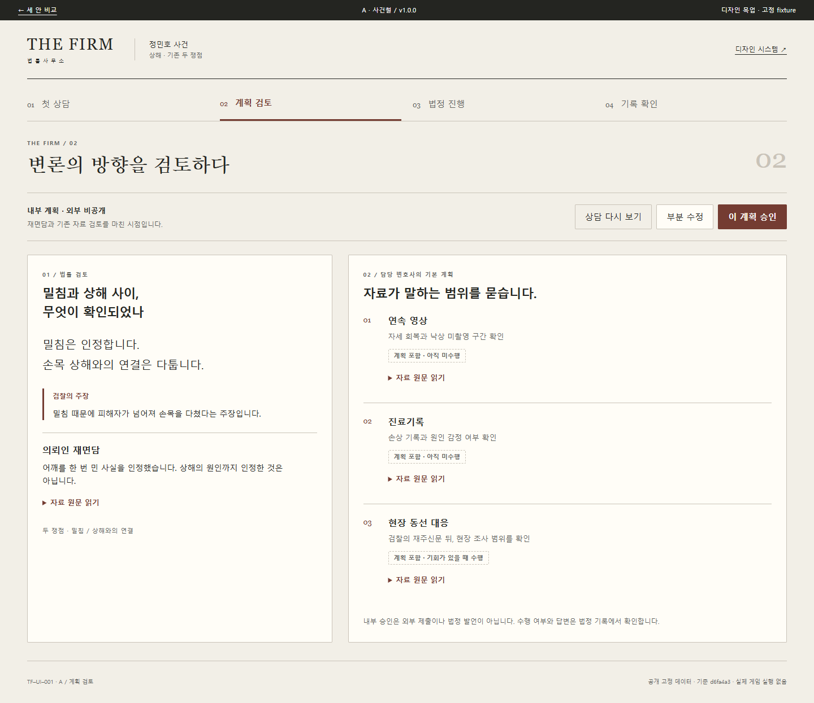
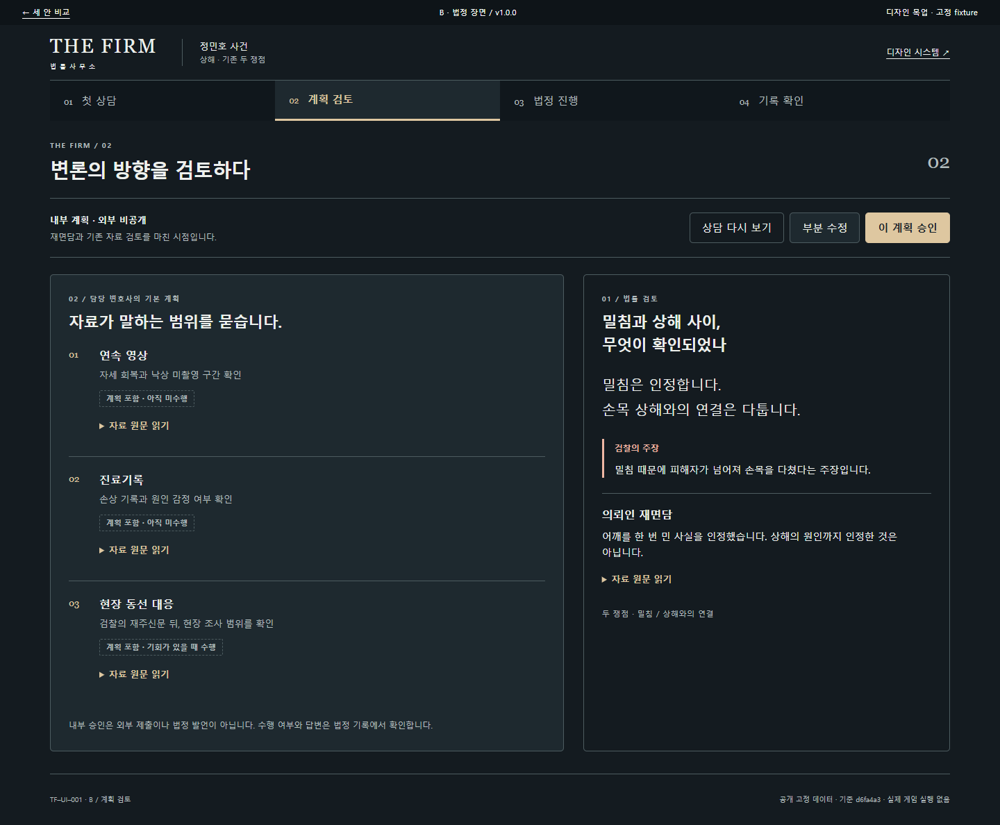
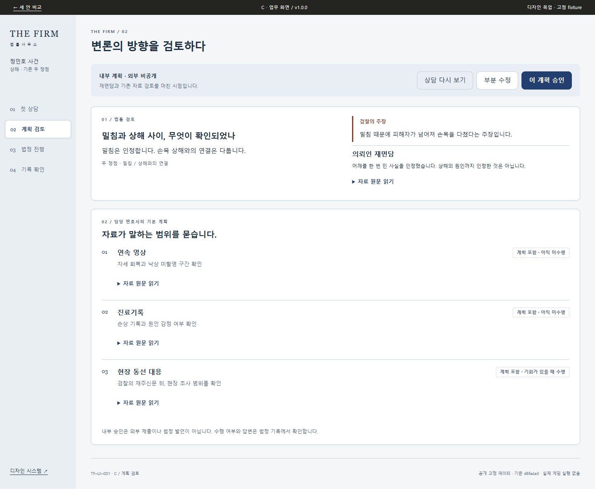

사건철 중심
자료 원문과 계획을 나란히 놓습니다. 종이의 위계와 편집된 여백으로 검토의 맥락을 이어 갑니다.

A안 직접 둘러보기 →정민호 사건의 상담 → 계획 → 법정 → 기록.
같은 대사와 같은 실제 기록을 서로 다른 정보 구조로 비교합니다.
고정 fixture를 사용하는 디자인 목업입니다.
기준 서비스의 실행 결과를 미리 채웠으며, 게임 실행이나 판정을 수행하지 않습니다. 승인 전 실제 UI 구현은 시작하지 않습니다.
자료 원문과 계획을 나란히 놓습니다. 종이의 위계와 편집된 여백으로 검토의 맥락을 이어 갑니다.

A안 직접 둘러보기 →인물과 발언을 화면의 중심에 둡니다. 내 계획과 근거를 보조 영역으로 보내 공방을 따라갑니다.

B안 직접 둘러보기 →짧은 사건 요약과 분명한 다음 행동. 세로 단계 안내와 필요할 때 펼치는 근거로 읽기 부담을 줄입니다.

C안 직접 둘러보기 →이번 목표인 ‘계획과 기록의 관계’를 가장 직접적으로 비교할 수 있습니다. 계획 검토에서는 자료와 질문 목적을, 기록 확인에서는 실제 답변과 판단을 나란히 읽습니다.
B는 발언의 몰입감, C는 빠른 업무 파악이 강점입니다. A의 자료 탐색 부담이 실제 체험에서도 적은지는 사람의 판단이 필요합니다. 이 추천은 선택이나 구현 승인이 아닙니다.
각 안의 상담·계획·법정·기록을 같은 순서로 확인합니다. 무음 화면 순회입니다.
필요한 결정은 한 번입니다.
안 A / B / C 또는 구체적인 수정점.
응답 전에는 승인 대기 상태를 유지합니다.